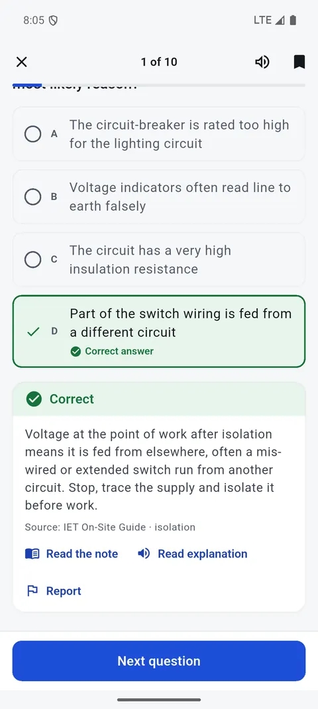

Not a government app. Sparkwise is an independent study app made by Kodfu Bilisim. It is not affiliated with or endorsed by the IET, BSI, City & Guilds, EAL, NET, the ECS, the JIB, NICEIC, NAPIT, MCS, HSE or OZEV. It does not contain the real exam questions and never reproduces BS 7671 text.
All exams › ECS Electrical Safety Unit
ECS Electrical Safety Unit assessment: questions and mock test
The ECS Electrical Safety Unit (ESU) is a 30-question multiple-choice assessment, taken in 30 minutes, and you need 21 right (70%). With the ECS HS&E assessment, it is what most allied trades need for an ECS Related Discipline card. This page sets out the format and the eight assessment areas, then gives you 8 free practice questions with answers. Sparkwise has 212 questions and timed mocks in the same format.
Practise the ESU: get Sparkwise on Google Play Try 8 free questions
Free in the app: 70 ESU questions and one full mock. ECS ESU unlock: £7.99 once for all 212 questions and every mock. No subscription. Android now; iPhone version not yet available.
On this page
Who needs the Electrical Safety Unit?
The ESU is a basic electrical safety assessment run by the JIB’s Electrotechnical Certification Scheme (ECS). It is for trades that work on or around electrical installations without being electricians, such as field engineers, equipment installers, aerial and satellite engineers, control systems engineers and trace heating installers. A big part of it is knowing where your work stops and when a job must go to a qualified electrician.
For an ECS Related Discipline card you need a pass in the ESU, a current ECS HS&E assessment and a job description from your employer. The ECS says the ESU is not suitable on its own for new entrants or trainee electricians. See the ECS Related Discipline card page for the details that apply to you.
Format and pass mark
| Item | ECS Electrical Safety Unit |
|---|---|
| Questions | 30 multiple choice, one correct answer from four |
| Time | 30 minutes |
| Pass mark | 21 of 30 (70%) |
| Books or notes | None are listed as allowed; Sparkwise treats it as closed book, like the HS&E |
| How | Online with the JIB’s remote invigilation, through some training providers and partner schemes, or through employers registered on the ECS Employer Portal |
| Sparkwise mock | 30 questions, 30 minutes, 21 to pass, with the same area mix |
Source: the ECS Electrical Safety Unit assessment guide (06-2023) and the ECS ESU page. You book the ESU separately from the HS&E, though you can sit them one after the other. Our ECS HS&E guide covers the other half.
The eight assessment areas
The ECS guide sets how many of the 30 questions come from each area. Testing and cabling together make up 11 of them.
| Assessment area | Questions in the real test | Questions in Sparkwise |
|---|---|---|
| Basic electrical theory and the dangers of electricity | 4 | 30 |
| Key electrical regulations and legislation | 2 | 22 |
| Safe working practices and safe isolation | 3 | 22 |
| Cables, colour codes and supplies | 5 | 34 |
| Limits and boundaries of your work | 2 | 20 |
| Basic electrical equipment types | 4 | 28 |
| Risk assessments, method statements and permits | 4 | 22 |
| Inspection and testing before energising | 6 | 34 |

Answers that explain why
Every Sparkwise question has a short explanation and the source it rests on, such as the Electricity at Work Regulations, HSE guidance or BS 7671. Spaced review brings back the ones you got wrong. (This screen is from another Sparkwise exam; ESU questions work the same way.)
8 free ECS Electrical Safety Unit questions
One question from each assessment area, with the answer and a short explanation. They are original Sparkwise questions written from health and safety law, HSE guidance and BS 7671, not the real ECS questions, and not taken from the ECS guide’s examples.
Question 1 · Choose one answer
How does the resistance of a copper conductor change if its length is doubled?
- It doubles
- It halves
- It goes up four times
- It stays the same
Show the answer
Answer A: It doubles
Resistance is proportional to length. Twice the length gives twice the resistance, all else being equal.
Source: R = ρL ÷ A
Question 2 · Choose one answer
Up to what voltage does BS 7671 generally apply?
- 1000 V a.c. or 1500 V d.c.
- 11 kV a.c. or 33 kV d.c.
- 230 V a.c. or 400 V d.c.
- 50 V a.c. or 120 V d.c.
Show the answer
Answer A: 1000 V a.c. or 1500 V d.c.
BS 7671 covers installations at voltages up to 1000 V a.c. or 1500 V d.c., which is the low voltage band. Higher-voltage systems are covered by other standards.
Source: BS 7671 Part 1 (scope)
Question 3 · Choose one answer
After the mains supply to a server cabinet is isolated, the equipment stays on. What is the most likely reason?
- The cabinet frame stores mains voltage
- The isolator has a built-in time delay
- It is fed by an uninterruptible power supply
- The earth conductor is supplying the load
Show the answer
Answer C: It is fed by an uninterruptible power supply
A UPS keeps equipment running from batteries when the mains is lost. Its output stays live until the UPS itself is isolated.
Source: HSE: HSG85 (alternative supplies)
Question 4 · Choose one answer
Why should data and telecom cables (Band I) be segregated from mains power cables (Band II)?
- To stop mains voltage reaching ELV circuits and reduce interference
- To let the power cables carry more current than their rating
- Because data cables are always much heavier than the mains power cables
- Because mains cables must be visible along their whole route
Show the answer
Answer A: To stop mains voltage reaching ELV circuits and reduce interference
If insulation fails, mains voltage could appear on ELV wiring that people touch. Separation also reduces electrical interference with signals.
Source: BS 7671 Section 528
Question 5 · Choose one answer
In England, which of these is notifiable under Part P of the Building Regulations?
- Adding a new circuit in a dwelling
- Changing a ceiling light on its existing circuit
- Replacing a damaged socket front like for like
- Plugging a new appliance into an existing socket
Show the answer
Answer A: Adding a new circuit in a dwelling
New circuits in dwellings are notifiable. Like-for-like replacements on existing circuits outside special locations are not, though they must still be done safely.
Source: Approved Document P (England)
Question 6 · Choose one answer
Which kind of fault is an arc fault detection device (AFDD) designed to detect?
- Dangerous arcing in a circuit's wiring
- High voltage on the supply
- Earth leakage current through a person's body
- A missing earth at the origin
Show the answer
Answer A: Dangerous arcing in a circuit's wiring
AFDDs watch the current waveform for the signature of series or parallel arcing, for example from a damaged cable or loose terminal, and disconnect to reduce fire risk.
Source: BS EN 62606; BS 7671 reg 421.1.7
Question 7 · Choose one answer
Why should isolations be recorded in an isolation log or on a permit on larger sites?
- So testing is not needed afterwards
- So everyone knows what is isolated, by whom and why
- So the circuit can be left without a lock
- So the supply company can bill for lost energy
Show the answer
Answer B: So everyone knows what is isolated, by whom and why
A record shows which circuits are isolated, who isolated them and for what work, which stops someone re-energising equipment others are working on.
Source: HSE: HSG85
Question 8 · Choose one answer
What is the danger of a light switch wired in the neutral instead of the line?
- The lamp flickers but there is no safety risk
- The light can be switched from only one place
- The circuit breaker will not trip on overload
- The lampholder stays live when the light is off
Show the answer
Answer D: The lampholder stays live when the light is off
With the switch in the neutral, the line still reaches the lampholder when the light is off, so someone changing a lamp could get a shock.
Source: BS 7671 reg 643.6
You’ve seen 8 of 212 questions for the ECS Electrical Safety Unit
The Sparkwise app has all 212 across 8 topics, each with an explanation and where to look, and 8 calculations have a step-by-step worked solution. It also has timed 30-question mocks of 30 minutes with the 21-of-30 pass mark.
70 of them are free in the app. The ECS ESU unlock is £7.99 one-off: every question and every mock for this exam. Or get All exams, £24.99 one-off: all 12 exams in Sparkwise and any exam added later. No subscription.
Android now; iPhone version not yet available.
How to prepare
- Get safe isolation word perfect. It appears in two areas: the steps, the test kit (an approved voltage indicator and proving unit) and why you prove the tester before and after.
- Know your limits. Questions on competence and boundaries ask when to stop and call an electrician. The answer is rarely “carry on carefully”.
- Learn the colours and voltages. Cable colours, LV and ELV ranges and single and three-phase voltages are quick marks.
- Practise at speed. One minute a question leaves little time to think twice. A timed mock shows whether you can keep the pace.
FAQ
How many questions are in the ECS Electrical Safety Unit test?
30 multiple-choice questions, each with four options, in 30 minutes. You need 21 correct (70%) to pass.
Which ECS card needs the Electrical Safety Unit?
The ECS Related Discipline card needs an ESU pass, a current ECS HS&E assessment and a job description from your employer. The ECS says some other cards need it too; check the ECS website for your card.
Can I take the ESU at home?
The JIB offers remote invigilation, so you can sit it online in a quiet room with a webcam. Some training providers and employers registered on the ECS Employer Portal also run it.
Are these the real ESU questions?
No. They are original practice questions on the same areas. Sparkwise is an independent app and is not linked to the ECS or the JIB.
How much is the ESU in Sparkwise?
Free to download, with 70 ESU questions and one full mock free. The ECS ESU unlock is a one-off £7.99. The ECS HS&E and 18th Edition come together for £12.99, and All exams, a one-off £24.99, unlocks all 12 exams.
Practise the ECS Electrical Safety Unit assessment in the Sparkwise app
212 original questions for the ECS Electrical Safety Unit assessment, each with an explanation and where to look, and timed 30-question mocks of 30 minutes with the 21-of-30 pass mark. Spaced review brings back the questions you got wrong.
- Works offline. No ads, no account, no data collected.
- The same app has the 18th Edition, the ECS HS&E and every other exam: see all 12.


Free: two full topics and three questions in every other topic, and one full mock (70 questions).
ECS ESU, £7.99 one-off: every question and every mock for this exam.
All exams, £24.99 one-off: all 12 exams in Sparkwise and every exam we add later. No subscription.
Android now; iPhone version not yet available. Sparkwise helps you prepare; it cannot promise a pass.
Where the exam facts come from
The format, time and pass mark above come from these public pages. Check them, or ask your centre, before you book.
- Electrical Safety Unit assessment (ECS, run by the JIB)
- ECS Related Discipline card (ECS, run by the JIB)
- Electricity at work: safe working practices (HSG85) (Health and Safety Executive (HSE))
Exam details can change. Sparkwise is not linked to any awarding or assessment body.